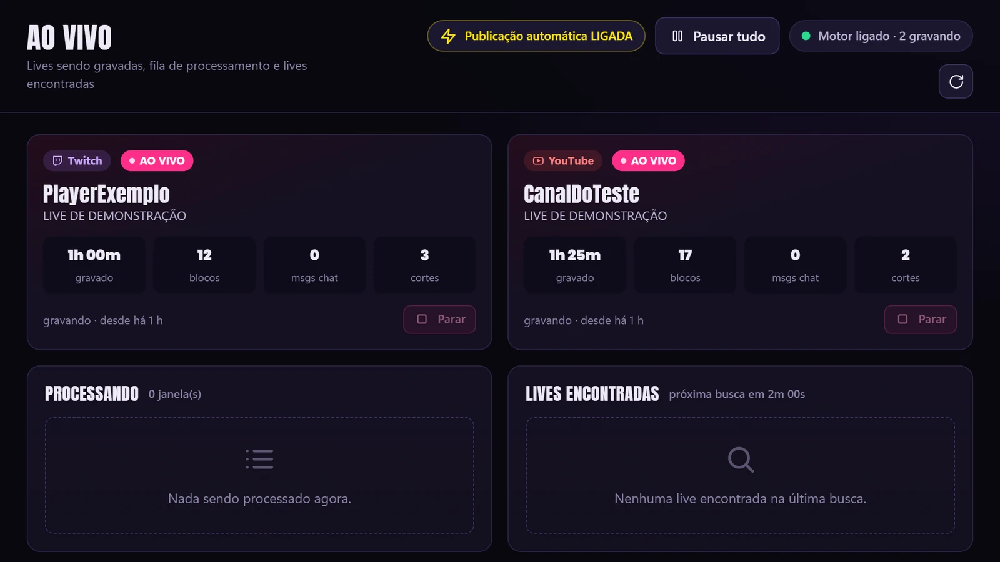
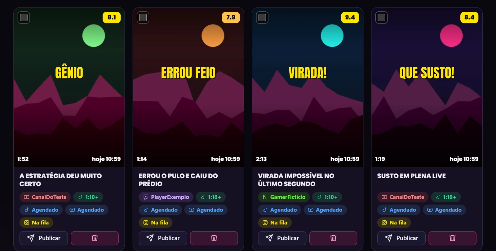
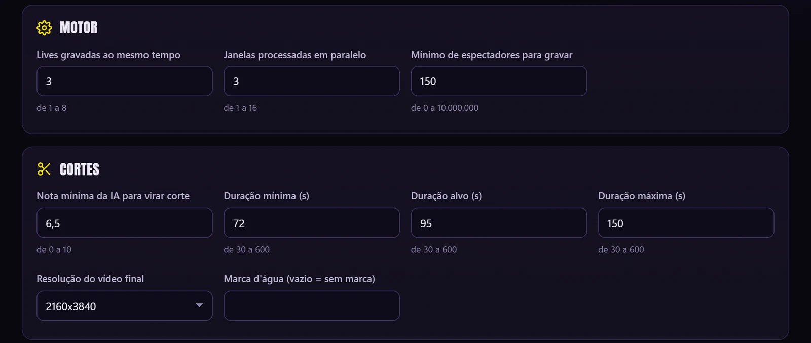
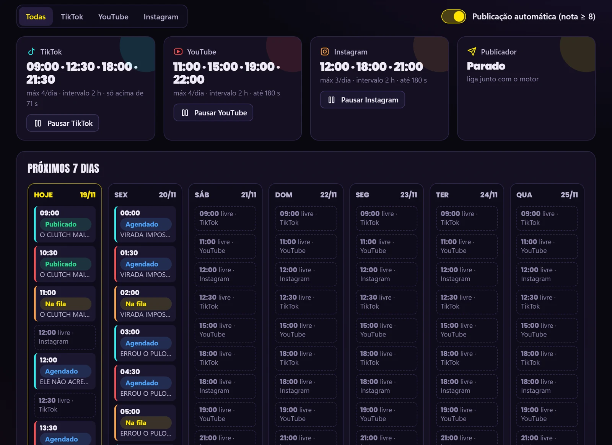
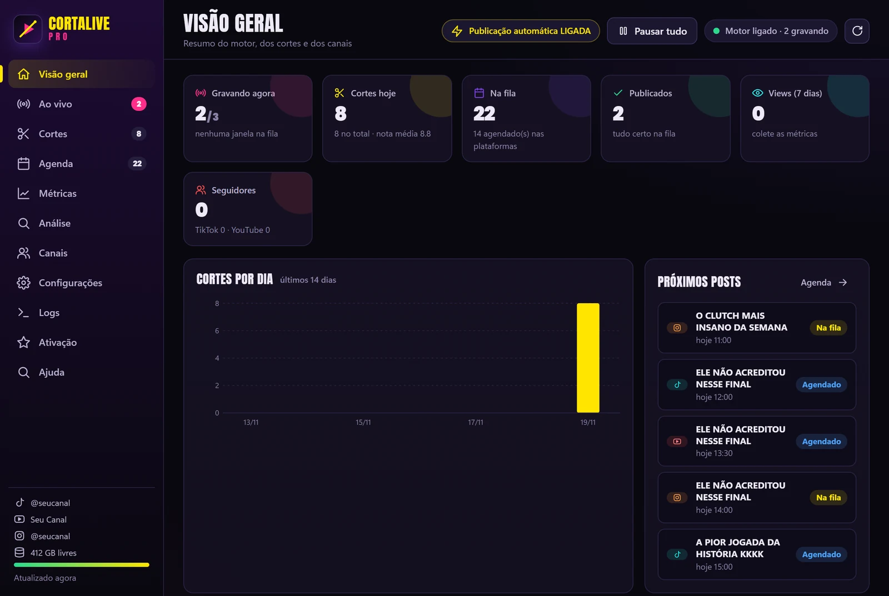

Ele grava a live, acha o momento e posta o corte. Eu só confiro.
O CortaLive Pro fica rodando no seu PC: grava os canais que você escolher, encontra os picos da live, corta em vertical com legenda e publica no TikTok, no YouTube Shorts e no Instagram Reels nos horários que você definiu. Eu fiz para o meu canal de cortes, o Afiado Games, e desde 18/11 quem posta lá é ele.
R$ 297R$ 147
com o cupom CORTA150 até 29/11 às 23:59. Ou 12x de R$ 15,27 no cartão. Pagamento único.
R$ 297
pagamento único. Ou 12x de R$ 30,68 no cartão.
Eu fiz para o meu próprio canal
Eu tenho um canal de cortes de games, o Afiado Games. E cortar live na mão é assim: assistir horas de transmissão atrás de um minuto bom, cortar, legendar, pensar num título, postar em três redes. Um corte de cada vez.
Então escrevi um programa pra fazer isso por mim. Ele acompanha as lives, grava, separa os trechos em que o áudio e o chat explodem, transcreve, corta e publica. Desde 18/11/2026 os cortes do Afiado Games saem sozinhos, do meu PC, pelo CortaLive Pro.
Não tenho números pra te mostrar ainda: o sistema começou a postar lá agora. Mas ele está rodando de verdade, em público, e você pode conferir antes de pagar qualquer coisa. O programa que estou vendendo é esse mesmo.
— SrSatriano, dono do Afiado Games e quem escreveu o CortaLive
Entra uma live, saem cortes. Nesta ordem.
As telas abaixo são do programa de verdade, com dados de demonstração no lugar dos canais reais.
-
01 / grava
Você cola o link do canal. Ele grava toda vez que o canal entra ao vivo.
Aceita canais da Twitch, do YouTube e da Kick. Se quiser, ele também procura lives de um jogo específico. A gravação vai em blocos de 5 minutos, junto com o chat.

Ao vivotela de demonstração -
02 / escolhe
Acha os picos e dá nota para cada um.
Ele cruza o volume do áudio com o movimento do chat para achar os trechos fortes. O trecho é transcrito no seu próprio PC (Whisper), e a IA dá uma nota de 0 a 10 e escreve título, legenda e hashtags. Abaixo da nota mínima que você definiu, não vira corte.

Cortesnota da IA no canto de cada corte · tela de demonstração -
03 / corta
Corta em vertical, com o rosto do streamer em cima.
Legenda palavra a palavra, título e crédito ao criador, em até 4K. Duração e resolução você ajusta.
um exemplo do que saiUm corte de 1:35 em 4K, com legenda palavra a palavra e “Créditos: canal (twitch)” na legenda do post.

Configuraçõesalvo de 95 s (1:35), vídeo final 2160x3840 -
04 / posta
Publica nos horários da sua grade.
Cada rede tem seus horários. No TikTok só vão cortes com mais de 1:10, por causa da monetização; no Shorts e no Reels, até 3 minutos. Precisa parar? Pausa tudo de uma vez ou só uma rede.

Agendapausa por rede · tela de demonstração -
05 / acompanha
E você só abre o painel pra ver como está.
O que está gravando, quantos cortes saíram hoje, a fila e os próximos posts. Tem também métricas e uma aba de análise.

Visão geraltela de demonstração


O que você precisa ter (e o que não precisa)
Prefiro que você saiba agora do que descobrir depois de pagar.
Precisa
- Windows 10 ou 11, 64 bits. Não roda em Mac nem em Linux.
- PC ligado. Live que acontece com o PC desligado não é gravada, e post agendado não sai.
- Espaço em disco para as gravações e os cortes.
- Internet para gravar e publicar.
- Contas no TikTok, YouTube e Instagram em que você quer postar. Você entra nelas pelo navegador do próprio CortaLive.
Não precisa
- Placa de vídeo.
- Chave de IA (opcional). Com uma chave do Gemini, do Vertex (Google Cloud), do Claude ou da OpenAI, a IA dá as notas e escreve os títulos; a cobrança da IA é na sua conta. Sem chave, ele escolhe só pelos picos e usa títulos genéricos.
- Saber editar vídeo.
- Mensalidade. É pagamento único.
Tem uma versão grátis. Ela faz bem menos.
O Básico é de código aberto e corta vídeos que você já gravou. O Pro faz o ciclo inteiro: grava, escolhe, corta e posta.
| O que faz | Básico | Pro |
|---|---|---|
| Corta vídeo ou live já gravada | sim | sim |
| IA escolhe os momentos e escreve título e legenda | sim | sim |
| Legenda palavra a palavra e crédito ao criador | sim | sim |
| Resolução do corte | 1080x1920 | até 4K |
| Grava lives sozinho (Twitch, YouTube, Kick) | não | sim |
| Usa o chat para achar os picos | não | sim |
| Publica no TikTok, Shorts e Reels | não | sim |
| Agenda, pausa por rede, métricas e análise | não | sim |
| Código aberto | sim (MIT) | não |
| Preço | grátis | R$ 147 c/ cupomR$ 297 |
Paga uma vez. Usa em até 2 PCs.
R$ 297R$ 147
com o cupom, à vista, ou 12x de R$ 15,27 no cartão.
R$ 297
à vista, ou 12x de R$ 30,68 no cartão.
R$ 150 de desconto até 29/11 às 23:59 (horário de Brasília). O link não aplica sozinho: no checkout, clique em “Aplicar cupom” e digite o código.
pagamento pela Cakto · cartão em até 12x
- Licença vitalíciaPara até 2 PCs. Sem mensalidade.
- Ativação automáticaVocê digita o e-mail da compra e o código que chega no e-mail da Cakto. O programa ativa sozinho.
- Reembolso em 7 diasPelo Código de Defesa do Consumidor. É só pedir pela Cakto.
- Compre pelo botão e guarde o e-mail de confirmação.
- Siga o guia de instalação e ativação: baixar, instalar, ativar.
- No painel, siga os primeiros passos: escolher a IA (se quiser), os canais e conectar as suas contas.
Perguntas que eu também faria
Inclusive as que não ajudam a vender.
Funciona sem chave de IA?
Funciona. Sem IA ele escolhe os trechos só pelos picos de áudio e de chat e usa títulos genéricos. Com uma chave (Gemini, Vertex, Claude ou OpenAI), a IA dá nota a cada trecho e escreve título, legenda e hashtags. A cobrança da IA é feita pelo provedor, na sua conta.
Posso cortar a live de qualquer streamer?
A responsabilidade pelo que você corta e publica é sua. Corte conteúdo seu ou de criadores que permitem cortes, respeite as regras de cada rede e os pedidos do criador, inclusive de remoção. O CortaLive coloca o crédito ao criador no vídeo e na legenda do post, mas crédito não substitui permissão: direitos autorais e de imagem continuam valendo.
E se o TikTok, o YouTube ou o Instagram mudarem?
O CortaLive publica pelo navegador, como você faria na mão. Se uma rede mudar as telas dela, a publicação nessa rede pode parar de funcionar até o programa ser ajustado. É um risco real de qualquer ferramenta desse tipo, e eu prefiro avisar antes. Os cortes continuam salvos no programa.
O PC precisa ficar ligado o tempo todo?
Para gravar e postar, sim. Live que acontece com o PC desligado não é gravada, e post agendado para quando o PC estiver desligado não sai.
Em quantos computadores posso usar?
A licença é vitalícia e vale para até 2 PCs. A ativação pede o e-mail e o código da compra.
E se eu não gostar?
Você tem 7 dias para pedir reembolso, pelo Código de Defesa do Consumidor. O pedido é feito pela Cakto.
Abri o link e o cupom não apareceu.
O link não aplica o cupom sozinho. No checkout, clique em “Aplicar cupom” e digite CORTA150. Vale até 29/11 às 23:59 de 2026, horário de Brasília.
Roda no Mac ou no Linux?
Não. Só Windows 10 e 11, 64 bits.